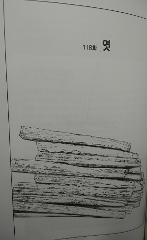
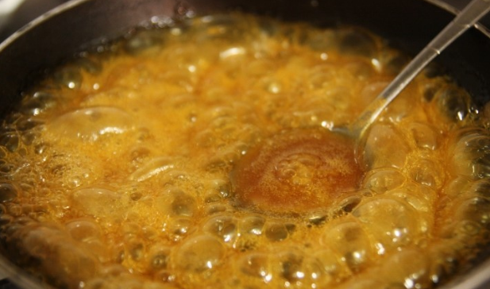
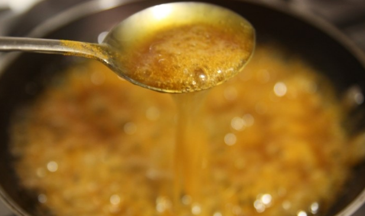
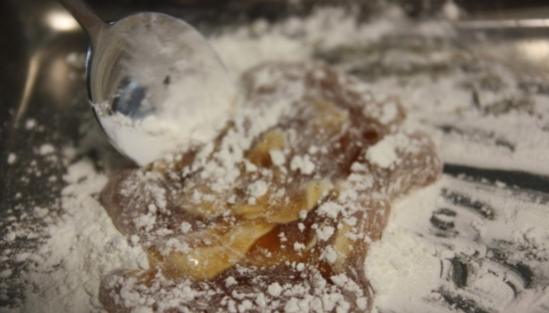
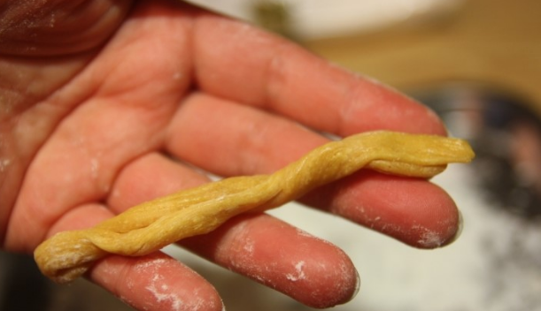
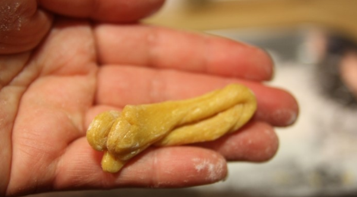
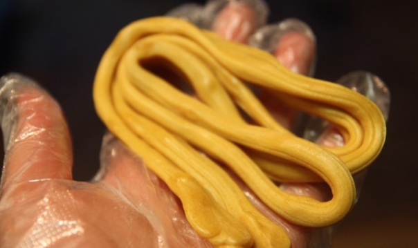
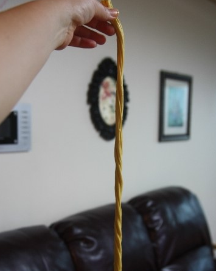
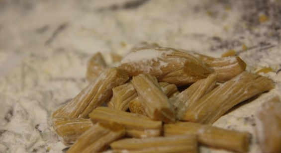

엿
줄거리
일제강점기부터 한국 근현대사를 모두 겪고 결국 고향을 떠난 할머니의 마음을 향수로 채워준 엿! 한 번 만들어 볼까요???

일제강점기부터 한국 근현대사를 모두 겪고 결국 고향을 떠난 할머니의 마음을 향수로 채워준 엿! 한 번 만들어 볼까요???
재료
시중에 파는 조청, 전분가루
시중에 파는 조청, 전분가루
레시피
 1. 조청을 딱딱하게 굳기 전 정도까지 바글바글 끓여줍니다.
 2. 숟가락으로 떠서 걸쭉하게 떨어지면 완성!
 3. 쟁반에 전분가루를 퍼 놓는다. 그 위에 졸여진 조청을 한덩이로 부어준다.
 4. 덩어리를 길게 늘어뜨려서 반으로 접어준다.
 5. 반으로 접고 길게 늘어뜨린다. 너무 딱딱해지기 전까지 이 과정을 계속 반복한다.
 6. 엿 모양을 서서히 잡아간다.
 7. 탄성이 좋아서 이렇게 끊어지지 않는다.
 8. 먹기 좋게 가위로 잘라주면 완성!
*****완성*****